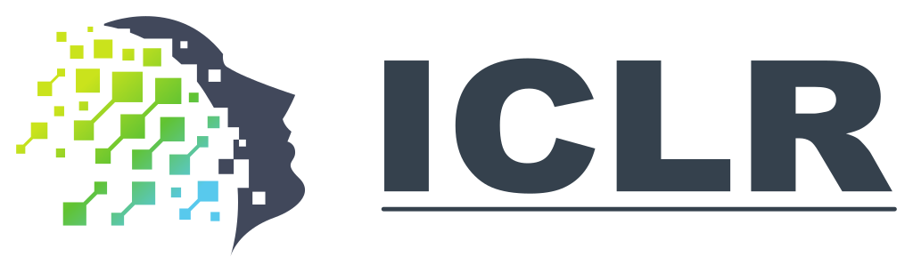
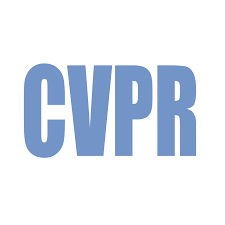

|
Qunzhong Wang (王群中) Hi, I'm Qunzhong Wang. I am currently an undergraduate at the Chinese University of Hong Kong, majoring in Mathematics and Information Engineering. Prior to my undergraduate studies, I received the gold medal in Chinese Mathematical Olympiad (aka CMO).
My current research interests includes:
I feel incredibly fortunate to have been advised by distinguished scholars: Hong Cheng; Xiangyu Yue; Sotirios Sabanis; Zhuang Liu; Weiyang Liu. You can view my full resume here. |


|
Publications

Qunzhong Wang, Jie Liu, Jiajun Liang, Yilei Jiang, Yuanxing Zhang, Yaozhi Zheng, Xintao Wang, Pengfei Wan, Xiangyu Yue, Jiaheng Liu
Preprint, Under Review at International Conference on Learning Representations (ICLR) 2026
arXiv / Paper / Code
Boosting multimodal reward models by adding tool invocation capabilities to handle long videos.

Selected Awards
Talent Development Scholarship, HKGOV (2025) |
|
Professor Charles K. Kao Research Exchange Scholarships, Chinese University of HK (2025) |
|
Dean's List, Chinese University of HK (2024, 2025) |
|
ELITE Stream Scholarship, Chinese University of HK (2024, 2025) |
|
Mathematical Modeling Contest, Meritorious Winner (2024) |
|
Soong Ching Ling Scholarship (2023) |
|
Prof Omar Wing Memorial Scholarship (2023) |
|
Simon Marais Mathematics Competition, 11th in East Division (2023) |
|
Admission Scholarship, Chinese University of HK (2023) |
|
China Physics Olympiad (Provincial), First Prize (2022) |
|
China Chemistry Olympiad (Provincial), First Prize (2022) |
|
China Mathematics Olympiad, Gold Medal (2022) |
Experiences
|
2024.04—2024.09 Database Research Group, The Chinese University of Hong Kong Advised by Prof. Hong Cheng |
|
|
2024.12—2025.09 Kling AI Technology Department, Kuaishou Technology Advised by Dr. Xintao Wang |
|
|
2025.09—Present Zhuang's Lab, Princeton University Advised by Prof. Zhuang Liu |
Services
|  |
International Conference on Learning Representations (ICLR) |
|  |
IEEE/CVF Conference on Computer Vision and Pattern Recognition (CVPR) |
Talks & Tutorials
ICML 2025 Poster Session. July 2025
Slides
Introducing a theoretical analysis framework of graph prompting methods.
Research Seminar, Kuaishou Technology. December 2025
Slides
Introducing a new paradigm of multimodal reward models with Thinking-with-Image framework.